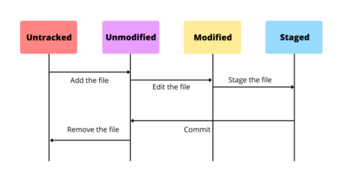
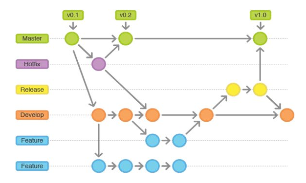
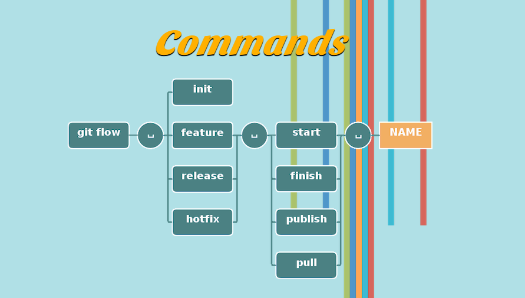
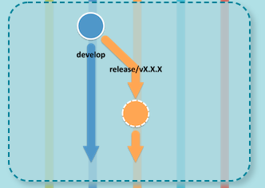

Source Version Control (Git)
- Concepts: repository, registry, ssh
- File states, workflow, .gitignore and .gitkeep
- Basic commands: clone, checkout, add, commit, push, pull, merge, revert, reset, log… Using git features on PHPStorm
- Git flow
Concepts
Repository
Repository là nơi chứa và ghi lại states của thư mục và file. states lưu lại các thông tin, lịch sử thay đổi của thư mục và file.
-
GIT Repositoryđược phân thành 2 loại làremote repositoryvàlocal repository.Remote repository: Là repository để chia sẻ giữa nhiều người và git đặt trên server chuyên dụng của nó.Local repository: Là repository trên máy local.
Registry
-
Registryhoạt động như một kho chứa chung, public hoặc private, cho nhiềurepository. Thường dùng chung cho 1 tổ chức, có thể publish và share packages, có thể dễ dàng sử dụng như một phầndependencytrong các dự án. -
GitHub Packages

-
GitLab Container Registry
SSH
-
SSHlà một giao thức tương tác giữa client-server có sử dụng cơ chế mã hoá mạnh mẽ nhằm bảo vệ tính toàn vẹn và bảo mật thông tin liên lạc, ngăn chặn các hiện tượng đánh cắp thông tin trên đường truyền. Thường dùng như một phương pháp để đăng nhập từ xa an toàn từ máy tính này sang máy tính khác. -
GIT SSH: Bảo mật các kết nối của local với server và không phải nhập mật khẩu github hoặc gitlab mỗi lần pull hoặc push code. -
Cơ chế xác thực của GIT SSH : Dùng Public/Private key cryptography
Public Key- là một file text - nó lại lưu ở phíaGit Server SSH, nó dùng để khiClientgửiPrivate Key(file lưu ở Client) lên để xác thực thì tiến hành verify giữaPrivate KeyvàPublic Keynày. Nếu cặp key này đúng ( key pair được gen từssh-keygen) thì kết nối giữa client - git server là an toàn.Private Key- là một file text - dùng để xác thực sự phù hợp củaPrivate KeyvàPublic Key. Client muốn kết nối vớiGit Server, thay vì nhập mật khẩu thì client gửiPrivate Keyqua SSH.
-
Tạo GIT SSH Key dùng
ssh-keygencủaOpenSSH -
Mở terminate (trên Linux, macOS hoặc cmd trên Windows) rồi gõ
Đầu tiên nó hỏi nhập thư mục sẽ lưu key sinh ra, hãy nhập thư mục - tên file muốn lưu hoặc nhấn Enter để sử dụng đường dẫn nó gợi ý (~/.ssh/id_rsa).
Sau đó nó yêu cầu nhập passphase, có thể nhấn Enter để rỗng. Cuối cùng nó sinh ra hai file key có tên id_rsa và id_rsa.pub ở thư mục đã nhập trên.

- Start
ssh-agent
Win → Services → OpenSSH Authentication Agent → Automatic (Delayed Start). Xong gõ
- Adding new SSH key to GitHub account:
- Testing SSH connection


File states, workflow, .gitignore and .gitkeep
-
File states: File có 2 states là
trackedvàuntracked. Dưới đây là File status lifecycle
-
Untracked state: Files đang ở local directory, chưa được thêm vàogithub repository index. File khi này ởuntracked state -
Unmodified state: Files đã được thêmgithub repository indexbằng lệnh$git add file-name. File khi này ởtracked state -
Modified state: Khi Files đượctrackedtrước đó có các thay đổi, chỉnh sửa nhưng không thực hiện việccommit the changes. -
Staged state: Khi Files đượccommitvà sẵn sàngpushvàogit repository.
-
-
Workflow
Một basic git workflow:
git clone...hoặcgit pull ...git add...git commit -m ...git push...

-
.gitignore: Liệt kê những file mà mình không mong muốn push lên git. Sử dụng các patterns:-
Sử dụng
#để comment và có thể để cách dòng cho dễ đọc. -
Tên file cần ignore:
example.exe -
Cả thư mục:
example_folder/ -
Sử dụng dấu
*để ignore các file có cùng định dạng. Ví dụ như bạn muốn ignore tất cả các file .xml trong project:*.xml. -
Còn nếu dùng
config/*.xmlthì nó chỉ ignore cho các fileconfig/abc.xmlmà không ignore cho các fileconfig/sub/abc.xml -
Sử dụng
**để ignore cho các thư mục không cần định rõ tên. Ví dụ:**/foonó sẽ ignore cho tất cả file hoặc thư mục có tên là foo ở mọi nơi trong project. -
Sử dụng kiểu
folder/**để ignore cho tất cả các file bên trong thư mục.
-
-
.gitkeep:-
Git không cho push các thư mục trống. Nếu ta cố gắng push một thư mục không có gì trong đó, mặc dù nó sẽ tồn tại trên máy local nhưng lại không được push lên git repo.
-
Một phương pháp phổ biến, được tiêu chuẩn hóa (ko phải tính năng của Git) để giải quyết vấn đề này là tạo một file
.gitkeep(hoặc tên gì cũng đc) vào các thư mục trống sau đó push bình thường.
-
Basic commands
Cấu hình và khởi tạo Repo
-
Đổi tên/email người dùng
-
Khởi tạo một Local Repository mới
- Khởi tạo một Remote Repository mới ở Git Server
Làm việc với Local Repo
git status
- git status xem trạng thái của Repo
- git status -s xem trạng thái của Repo ngắn gọn
- git clone path clone một Repository có địa chỉ là path
git add
- git add cập nhật file state vào staged
- git add filename thêm file vào staged
- git add *.c thêm file có phần mở rộng .c
- git add -A thêm mọi thứ có sự thay đổi (thêm file mới, xóa file, thay đổi nội dung ...)
- git add . thêm mọi thứ trừ xóa file
- git add - thêm mọi thứ trừ file mới
git commit
git commit -m "commit msg ..."commit mớigit commit --amend -m "commit msg ..."commit + cập nhật vào commit cuối
git log
git logxem lịch sử commitgit log -4xem lịch sử 4 commitgit log -4 -pxem lịch sử 4 commit + chi tiết thay đổigit log --onelinehaygit log --pretty=onelinehiển thị log trực quan trên 1 dòng
git diff
git diffXem sự khác biệt giữa thư mục làm việc và stagedgit diff --stagedXem sự khác biệt giữa staged và commit cuối
git rm, git reset, git clean
- git rm filename xóa file
- git reset HEAD filename hủy thay đổi của file
- git clean -d -fx . Xóa các file không được tracked, dùng khi muốn xóa bỏ nhanh các file không được tracked
git checkout
git checkout <branchname>chuyển sang branchname để codegit checkout -b <branchname>tạo mới branchname và chuyển sang branchname để code
Làm việc với Remote Repo
git remote
git remotexem list các Remotegit remote add name_remote addr_remotethêm một Remote vào Localgit remote show name_remotexem thông tin về Remotegit remote rename abc xyzđổi tên Remote
git pull, git fetch
-
git pull <remote> <branch>tải xuống nội dung từ Remote repository mà không làm thay đổi trạng thái của Local repository -
git fetch <remote> <branch>: tải xuống nội dung và cố gắng thay đổi trạng thái của Local repository cho phù hợp với nội dung đó
Làm việc với Tag
git tagxem danh sách taggit tag -a tagname -m "tag msg"tạo tag cho commit hiện tạigit tag -a tagname -m "tag msg" hashtạo tag cho commit cũgit show tagnamexem thông tin về commit có tagnamegit push origin tagnamecập nhật lên remote tất cả tagnamegit push origin --tagscập nhận lên remote tất cả taggit checkout tagnamexem về phiên bản commit có tagnamegit checkout -b newbranchname tagnametạo nhánh mới từ phiên bản tagnamegit push --delete origin tagnamexóa tag ở remotegit tag -d tagnamexóa tag ở local
Làm việc với branch
-
git branchliệt kê các branch -
git branch -vliệt kê các branch + commit cuối git branch --mergedcác branch gộp vào branch đang checkingit branch --no-mergedcác branch không gộp vào branch đang checkingit branch branchnametạo branch mớigit checkout -b branchnametạo branch mới, khi đang đứng ở một snapshot cũgit checkout branchnamechuyển branchgit merge branchnamegộp branch với branch hiện tạigit base branchnamegộp branch với branch hiện tạigit mergetoolcông cụ trực quan xử lý xung đột mergegit branch -d branchnamexóa branch
Git flow
Git Flow là tên gọi của 1 tool (command) hỗ trợ branch model gọi là A successful Git branching model do ông Vincent Driessen đề xuất ra. Người ta thường gọi đó là model hay tool, và trong git-flow có 5 kiểu branch với mỗi vai trò khác nhau:
-
master: là branch tồn tại xuyên suốt quá vòng đời của phần mềm được tạo mặc định trong Git khi ta tạo repository. -
develop: là nơi các develop phát triển chính branch luôn tồn tại song song với master -
feature: là nhánh được tách từ develop nhằm mục đích xây dựng các tính năng riêng mà không phụ thuộc vào nhau -
release: là nhánh tách từ develop để kiểm tra và fix bug chuẩn bị cho việc ra mắt sản phẩm -
hotfix: là nhánh tách từ master để fix gấp những bug còn tồn đọng mà trên release chưa xử lý hết

Git-flow extensions

Develop
- Initialize
Features
- Start a new feature

- Finish up a feature

-
Publish a feature
-
Getting a published feature
- Start a release

- Publish a release
- Finish up a release

Hotfixes
- Start a Hotfix

- Finish up a Hotfix